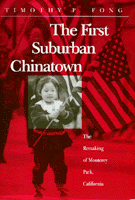

<body bgcolor="#FFFFFF" text="#000000" link="#0000FF" vlink="#CC0000" alink="#CC0000"><center><hr width="350" size="1" align="center" noshade>Ethnicity issues fuel internal strife as a community faces change<hr width="350" size="1" align="center" noshade><p><a href="https://cdcshoppingcart.uchicago.edu/Cart/ChicagoBook.aspx?ISBN=9781566391238&&PRESS=temple" target="_top">Buy this book!</a> | <a href="https://cdcshoppingcart.uchicago.edu/Cart/Cart.aspx?PRESS=temple" target="_top">View Cart</a> | <a href="https://cdcshoppingcart.uchicago.edu/Cart/Cart.aspx?PRESS=temple" target="_top">Check Out</a></p><p></p></center><!--none//--><h1>The First Suburban Chinatown</h1>
<H2>The Remaking of Monterey Park, California</H2>
<h3>Timothy P. Fong</h3>
<P>cloth 1-56639-123-7 $85.50, Jan 94, <FONT COLOR=#990033>Out of Stock Unavailable</FONT>
<br>paper 1-56639-262-4 $34.95, Sep 94, <FONT COLOR=#990033>Available</FONT>
<br>Electronic Book 1-43990-463-4 $34.95 <FONT COLOR=#990033>Out of Stock Unavailable</FONT>
<BR> 240 pp
6x9
14&nbsp;tables 2&nbsp;figures 8&nbsp;halftones
</P><h3 align="center"><P><font color="#996633">Donald H. Pflueger Local History Award, Historical Society of Southern California,
1999</font></P>
<P><font color="#996633">Outstanding Book Award in the Social Sciences, Association for Asian American Studies,
1995</font></P>
</H3>
<p>Monterey Park, California, only eight miles east of downtown Los Angeles, was dubbed by the media as the "First Suburban Chinatown." The city was a predominantly white middle-class bedroom community in the 1970s when large numbers of Chinese immigrants transformed it into a bustling international boomtown. It is now the only city in the United States with a majority Asian American population. Timothy P. Fong examines the demographic, economic, social, and cultural changes taking place there, and the political reactions to the change.
<p>Fong, a former journalist, reports on how pervasive anti-Asian sentiment fueled a series of initiatives intended to strengthen "community control," including a movement to make English the official language. Recounting the internal strife and the beginnings of recovery, Fong explores how race and ethnicity issues are used as political organizing tools and weapons.
<BR>&nbsp;<h2>Excerpt</h2><P>Excerpt available at <a href="http://www.temple.edu/tempress">www.temple.edu/tempress</a></p>
<BR>&nbsp;<h2>Contents</h2><P>
<p>Preface
<br>Introduction: A New and Dynamic Community
<br>1. Ramona Acres to the Chinese Beverly Hills: Demographic Change
<br>2. Enter the Dragon: Economic Change
<br>3. "I Don't Feel at Home Anymore": Social and Cultural Change
<br>4. Community Fragmentation and the Slow-Growth Movement
<br>5. Controlled Growth and the Official-English Movement
<br>6. "City with a Heart"?
<br>7. The Politics of Realignment
<br>8. Theoretical Perspectives on Monterey Park
<br>Conclusion: From Marginal to Mainstream
<br>Notes
<br>Select Bibliography
<br>Index
</P><BR>&nbsp;<H2>About the Author(s)</H2>
<table><tr><td valign="top"><img src="/tempress/authors/997_au.gif" height="90" width="75"></td><td width="100%" valign="middle"><p><B>Timothy P. Fong</B> teaches at the University of California, Davis, and at California State University, Hayward.</P></td></tr></table>
<BR><H2>Subject Categories</H2>
<p><A HREF="/tempress/asian_amer.html" TARGET="_top">Asian American Studies</a>
<BR>
</p>
<BR><h2 class="inpageheading">In the series</H2>
<P><I><a href="http://www.temple.edu/tempress/asam_history.html" onMouseOver="window.status='Click for other books in this series!'; return true;" onMouseOut="window.status=''; return true;" target="_top">Asian American History and Culture</a></i>, edited by K. Scott Wong, Linda Trinh V�, and Cathy Schlund-Vials.
</p><p>Founded by Sucheng Chan in 1991, the <I>Asian American History and Culture</I>, series has sponsored innovative scholarship that has redefined, expanded, and advanced the field of Asian American studies while strengthening its links to related areas of scholarly inquiry and engaged critique. Like the field from which it emerged, the series remains rooted in the social sciences and humanities, encompassing multiple regions, formations, communities, and identities. Extending the vision of founding editor Sucheng Chan and emeriti editor Michael Omi and David Palumbo-Liu, series editors K. Scott Wong, Linda Trinh V�, and Cathy Schlund-Vials continue to develop a foundational collection that embodies a range of theoretical and methodological approaches to Asian American studies.</p>
<p align="center"><a href="https://cdcshoppingcart.uchicago.edu/Cart/ChicagoBook.aspx?ISBN=9781566391238&&PRESS=temple" target="_top">Buy this book!</a> | <a href="https://cdcshoppingcart.uchicago.edu/Cart/Cart.aspx?PRESS=temple" target="_top">View Cart</a> | <a href="https://cdcshoppingcart.uchicago.edu/Cart/Cart.aspx?PRESS=temple" target="_top">Check Out</a></p><p><font face="Arial" size="1"><a href="copyright.html" onMouseOver="window.status='Web Copyright Policy';return true;" onMouseOut="window.status=''" title="Web Copyright Policy">&copy;</a> 2015 <a href="http://www.temple.edu" target="new" onMouseOver="window.status='Link to Temple University home page';return true;" onMouseOut="window.status=''" title="Link to Temple University home page">Temple University</a>. All Rights Reserved. http://www.temple.edu/tempress/titles/997_reg.html</font></p>